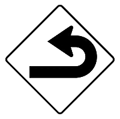
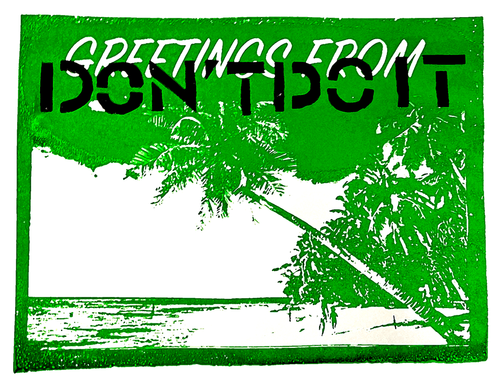
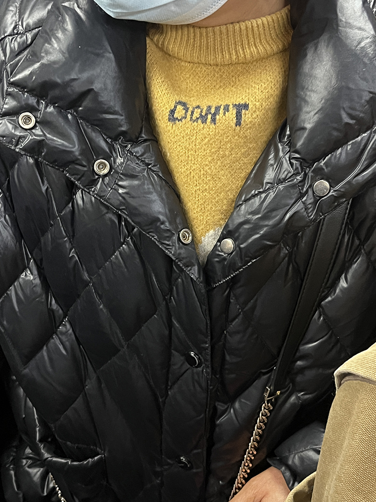

Made with Cavalry and inspired by movie title sequence, this project uses kinetic typography to express an imperative to negate. Centred around a single, everyday phrase“don’t do it”, the idea repeats itself until it becomes a parasitic voice within the restless rhythm of the city and one’s consciousness. Inspired by psychogeography and soundwalks, the layered recordings works with the visuals to depict the city as both real and subliminal.

